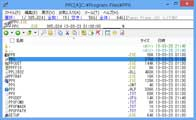
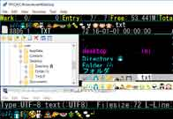

Homeへ戻る
↑Paper Plane xUI Version 2.00

ppx200.zip ( MultiByte版, 911 Kbytes, 2024-11-24, Windows 95 - Me / Windows NT 4.0 - 11/2022(32bit/64bit))
ppw200.zip ( UNICODE版,929 Kbytes, 2024-11-24, Windows NT 4.0 - Windows 11/2022(32bit/64bit))
ppx64200.zip ( 64bit版,1240 Kbytes, 2024-11-24, Windows XP/2003 - Windows 11/2022 64bit)
ファイル操作用のツール集です。
大量のファイルを快適に操作するための機能と操作性に重点を置き、
各ソフト間で処理を分担し、連携したファイル操作を行うことができます。
UNICODE版, 64bit版, MultiByte版があります。
・UNICODE版は、UNICODE文字を使ったファイル名のファイルを扱うことができます。
Windows 95/98/Meで動作しません。
・64bit版は、64bit用のコンテキストメニューを使うことができ、
32bit版よりも多くのメモリを利用可能です。
※32bit版Windowsで動作しません。
・MultiByte版は、Windows95以降のWindowsで動作します。
Windows 95/98/Me 向けです。
・PPb
コンソールコマンドライン。クリップボード、ヒストリ、引用等の
強力な編集機能と、コマンド実行を提供します。
・PPc
ファイラ／ファイルマネージャ。以下の特徴を持っています。
・１窓／独立表示２窓／一体・タブ付き複数窓／連結２窓等の表示
・ファイルコピー・移動のバックグラウンド実行
・拡張子やファイル内容等による独自判別実行
・DOS/コンソールプログラムの実行結果をPPbで表示
・PPv
マルチフォーマットビュワー。テキスト／画像／16進ダンプ表示、
S-JIS/JIS/EUC/ANSI/UNICODE等のコード等の切替、HTMLタグの簡易解析等が可能です。
・PPtray
ホットキー処理／ウィンドウ版コマンド実行を行います。
●
変更点1.99→2.00
All
・ライセンスをMITライセンスに変更
・*file等のファイル削除でディレクトリ階層数が多いときに異常終了するのを修正
・*goto の label 検索を強化した
・%etype で type に複数文字が指定されているときはエラー検出をできるように
・一行編集ダイアログの上に一覧表示する時,キャプションを避ける指定を追加(X_flst)
・PPeのファイル指定ダイアログの挙動を調整
PPc
・*dock add /once 使用後は再カスタマイズをしてもdock,ツールバーの再初期化なしに
・ドライブ選択メニュー\[L]で[TAB]か[BS]を押すと空容量表示を切替えられるように
PPv
・-document:command を使用したとき、常に -esc:off -tag:on になっていたのを修正
PPc,PPv
・1.99でステータス行の一行メッセージの消去処理がおかしくなったのを修正
PPcust
・ヒストリ内容の出力(hd)において、１つ目の履歴が出力されていなかったのを修正
1.99+3→2.00
All
・PPeのファイル指定ダイアログの挙動を調整
・+3で %en"123" がエラーになるのを修正
PPc
・ドライブ選択メニュー\[L]で[TAB]か[BS]を押すと空容量表示を切替えられるように
↑Paper Plane xUI(DirectWrite版) Version 2.00

ppxdw200.zip ( 32bit版, 1100 Kbytes, 2024-11-24, Windows 7/2008 R2 - Windows 11/2022(32bit/64bit))
ppxdw64200.zip ( 64bit版,1244 Kbytes, 2024-11-24, Windows 7/2008 R2 - Windows 11/2022 64bit)
PPc と PPv のメインウィンドウを DirectWrite/Direct2D で描画するようにした PPx です。
従来のGDI表示でできなかった Unicode の複雑な合字表示や、Windows 8.1 以降の色つきの絵文字の表示が可能です。
履歴は
通常版 PPx を参照してください。
※Version 1.75 から 32bit版と 64bit版を分けました。
↑Paper Plane xUI(ARM64版) Version 2.00
ppxarm64200.zip ( 1388 Kbytes, 2024-11-24, Windows10,11(Arm64))
64bit ARM 版 Windows 用 PPx です。
履歴は
通常版 PPx を参照してください。
migemoが必要なときは、
cmigemo-arm64.zipを使用し、辞書は従来のものを使用してください。
↑Paper Plane xUI Windows ヘルプ
ppxhelp.zip ( 430 Kbytes, 2024-11-24, Windows95/98/Me/NT4.0/2000/XP/2003)
オンラインヘルプの Windows Help ( WINHLP32.EXE )版です。
Windows Help は、Windows Vista 以降では標準で用意されていないため、ヘルプファイルを同梱しないで別途配布しています。
また、ヘルプに記載されている PPx のコマンド・関数（*command, %*function）の一覧を補完候補ファイル形式にしたファイルも同梱しています。
↑Paper Plane xUI Message Module
ppxmes03.zip ( 54 Kbytes, 2010-1-16, Windows95/98/Me/NT4.0/2000/XP/2003/Vista/2008/7(32bit/64bit))
ウィンドウにメッセージを送信するための PPx Module です。
PPx コマンド・関数モジュールを自作するときの参考用です。
32bit版/64bit版が入っています。
●
変更点R2→R3
・x64版を用意した
↑Paper Plane xUI Window Module
ppxwin09.zip ( 118 Kbytes, 2022-4-23, Windows 95 - Me / Windows NT 4.0 - 11/2022(32bit/64bit))
指定したウィンドウの最大化を交互におこなうコマンド、
指定したウィンドウ位置・大きさを別のウィンドウに合わせるコマンド
などが入った PPx Module です。
PPx コマンド・関数モジュールを自作するときの参考用です。
●
変更点R8→R9
・Windows10 上での %*windowrect の動作調整をした
・*windowposition でウィンドウ大きさも指定できるようにした
R7→R8
・Windows10 上での *windowposition, *windowsize, *fitwindow の動作調整をした
・*fitwindow で移動する位置を増やした(13-16)
・*fitwindow に大きさのみの調整指定を追加(30)
↑Paper Plane xUI Position Module
ppxpos01.zip ( 63 Kbytes, 2015-10-11, Windows 95 - Me / Windows NT 4.0 - 10/2012(32bit/64bit))
マウスカーソルの位置制御や、メニューの表示位置制御等をするための
PPx Module です。
↑Paper Plane xUI Text Module
ppxtext8.zip ( 133 Kbytes, 2023-10-14, Windows 95 - Me / Windows NT 4.0 - 11/2022(32bit/64bit))
現在日付の取得、設定のトグル処理等のコマンドなどが入った PPx Module です。
PPx コマンド・関数モジュールを自作するときの参考用です。
●
変更点R7→R8
・R7 で %*stdin のパラメータ解釈がおかしくなっていたのを修正
R6→R7
・*stdout, *stderr, %*stdin の文字数制限をなくした
・64bit arm版 (PPXTEXT64A.DLL) を追加
↑Paper Plane xUI WSH Script Module
ppxscr22.zip ( 261 Kbytes, 2024-9-22, Windows 95 - Me / Windows NT 4.0 - 11/2022(32bit/64bit))
WSH のように ActiveX Scripting Host を利用して PPx 上でスクリプトを実行する
PPx Module です。
・Paper Plane xUI 1.99 以降用です。0.43～1.98でも制限付きで使用可能です。
・以前の名称は単なる「Paper Plane xUI Script Module」でしたが、他の Script Module ができたため、名称変更しています。
●
変更点R21→R22
・Win9x 上の動作挙動を調整
・常駐インスタンスの情報を取得する関数(%*stayinfo)を追加
・PPx.CreateObject が OLE オブジェクトのイベントに対応(prefix指定)
・PPx.Entry.IndexFrom() を追加
・PPx.Entry.Reset() が正常に機能しない場合があるのを修正
・PPx.Enumerator() (JScript の new Enumerator相当)を追加
・PPx.GetFileInformation() で mode 指定を有効にした(PPx 1.97以降)
・PPx.Include(), PPx.LoadCount() を追加
・PPx.Pane.GroupIndex/GroupName/GroupCount/GroupListを追加
・PPx.Pane.IndexFrom と PPx.Pane.Tab.IndexFrom のメソッド形式を用意した
・R11以降 無効化していた PPx.StayMode を仕様変更して機能するようにした
R21+7→R22
・常駐時にPPxが終了したときの挙動を調整した
↑Paper Plane xUI V8 Script Module
ppxCV8R04.zip ( 12710 Kbytes, 2024-9-22, Windows 7/2008R2 - 10/2022(32bit/64bit), .NET 4.x)
Clear Script の V8 JavaScriptエンジンを利用して PPx 上で Javascript を実行する PPx Module です。
Paper Plane xUI 1.99 以降用です。1.86～1.98でも制限付きで使用可能です。
●
変更点R4
・PPx.Pane.IndexFrom と PPx.Pane.Tab.IndexFrom をプロパティから関数に変更
・PPx.Entry.DateCreated/DateLastModified/DateLastAccessedをECMAScript元期値に
・PPx.CreateObject がOLEオブジェクトのイベントに対応(import併用不可)
・PPx.Entry.IndexFrom() を追加
・PPx.Entry.Item(n) で、nの省略記載ができなかったのを修正
・PPx.Enumerator(JScript の new Enumerator相当)を追加
・PPx.GetFileInformation で mode 指定を有効にした(PPx 1.97以降)
・PPx.Include(), PPx.LoadCount() を追加
・PPx.result で undefined,true,falseを受け付けたときの結果をWSH版と揃えた
・PPx.StayMode を追加
・PPx.Quit を使うと PPx.result の結果が受け取れないのを修正
・常駐インスタンスの情報を取得する関数(%*stayinfo)を追加
・.NET コンポーネントの参照設定(PPx.AddReference)を追加
R3+6→R4
・ppx_finally を一行編集終了時に実行できるように(要 PPx 1.98+4)
・常駐時にPPxが終了したときの挙動を調整した
↑Paper Plane xUI QuickJS Script Module
ppxqjsR01.zip ( 1141 Kbytes, 2024-9-22, Windows 10/2015 - 11/2022(64bit))
QuickJS を利用して PPx 上で Javascript を実行する PPx Module です。
●
変更点T12→R1
・常駐時にPPxが終了したときの挙動を調整した
↑Paper Plane xUI QuickJS Script Module R1+1
ppxqjsR01p1.zip ( 1081 Kbytes, 2024-9-28, Windows 10/2015 - 11/2022(64bit))
QuickJS を利用して PPx 上で Javascript を実行する PPx Module です。
●
変更点R1→R1+1
・PPx.Arguments.Item(n) の戻り値を object から string に変更した
・PPx.Pane と PPx.Pane.Tab の iterator がおかしかったのを修正
↑Paper Plane xUI QuickJS Script Module R1+2
ppxqjsR01p2.zip ( 1081 Kbytes, 2024-10-12, Windows 10/2015 - 11/2022(64bit))
QuickJS を利用して PPx 上で Javascript を実行する PPx Module です。
●
変更点R1+1→R1+2
・PPx.Entry.Mark の setter が正常に機能しないのを修正
↑doclock (Paper Plane xUI Dock Module)
DOCLOCK.LZH ( 8 Kbytes, 2008-3-8, Windows95/98/Me/NT4.0/2000/XP/2003/Vista(32bit/64bit))
PPxに現在時刻を表示させる為の PPx Dock Module です。
PPx Dock Module を自作するときの参考用です。
↑DockShow (Paper Plane xUI Dock Module)
dockshow.zip ( 60 Kbytes, 2010-7-3, WindowsNT4.0/2000/XP/2003/Vista/2008/7(32bit/64bit))
Paper Plane xUI のウィンドウに埋め込んで使用するためのメディアプレイヤーです。
PPx Dock Module を自作するときの参考用です。
↑Paper Plane xUI Key Module
ppxkey08.zip ( 112 Kbytes, 2021-9-4, Windows 95 - Me / Windows NT 4.0 - 10/2019(x86, x64, Arm64))
ｎストロークキー入力や追加キー割当ての拡張ができます。
PPx キー入力拡張モジュールを自作するときの参考用です。
●
変更点R7→R8
・実行元PPxでkeymapを登録した後、一行編集/PPeでkeymap登録すると混ざるのを修正
R6→R7
・*mapkey の keymap は、シフトキーを無視しないようにした。
↑Paper Plane xUI CFX Module
ppxcfx4.zip ( 99 Kbytes, 2018-7-7, Windows 95 - Me / Windows NT 4.0 - 10/2016(32bit/64bit))
PPc のエントリ表示を拡張する PPx Module です。
棒グラフサイズ表示などが入っています。
PPc ファイル描画モジュールを自作するときの参考用です。
●
変更点R3→R4
・Windows95～Meで異常終了しないようにした。※グラフ表示のみ対応、文字表示未対応
・コメントグラフと拡張コメントグラフを追加した
↑Paper Plane xUI Windows Search Module
ppxws01.zip ( 89 Kbytes, 2010-10-2, Windows2000/XP/2003/Vista/2008/7(32bit/64bit))
Windows Search を使って一行編集の自動補完表示を行ったり、
検索を行ったりするための検索モジュールです。
検索モジュールを自作するときの参考用です。
↑Paper Plane xUI Everything Search Module
ppxets05.zip ( 102 Kbytes, 2013-12-21, Windows95/98/Me/NT4.0/2000/XP/2003/Vista/2008/7/8/2012/8.1(32bit/64bit))
David Carpenter氏作のNTFSドライブ内ファイルの検索ソフトである
Everythingを使って、
一行編集の自動補完表示を行ったり、検索を行ったりするための検索モジュールです。
検索モジュールを自作するときの参考用です。
●
変更点R4→R5
・(共通)最大回答数を指定できるようにした
・(ETP通信版)Everything 1.3 に仮対応 & 1.3 では各種ファイル情報を取得可能にした
・(ETP通信版)接続時のユーザ名とパスワードを指定できるようにした
↑Paper Plane xUI FS Module
ppxfs0.zip ( 94 Kbytes, 2024-8-24, Windows NT 4.0 - 11/2022(32bit/64bit)、MultiByte版使用不可)
ディレクトリ一覧を取得して参照したり、ファイルに保存できる Module です。
↑Paper Plane xUI CCX Module
ppxccxR1.zip ( 231 Kbytes, 2024-11-24, Windows 7 - 11/2022(32bit/64bit)、MultiByte版使用不可)
一行編集のヒストリリストや補完候補リストのリスト表示を独自表示に差し替えます。
また、リストのコメントの着色、リストの行間隔の変更ができるようになります。
●
変更点R1
・一行編集を閉じるときに異常終了するのを修正
・入力中のキーワードによるハイライト(*ListKeywordにより優先度指定可)を有効に
・表示文字の右端が表示されない問題に対応(X_ffix 又は _others:ListFfix)
・再カスタマイズ時に設定が反映されるように
↑PPx Common File Dialog Extender Version 1.1
ppdex11.zip ( 71 Kbytes, 2019-1-12, Windows 2000 - 10/2016(32bit/64bit))
ファイルを開く・保存する、ディレクトリを選択する、
ダイアログを拡張して PPx で選択するためのボタンを追加します。
●
変更点1.0→1.1
・名前を付けて保存ダイアログのときに、ボタンが押せないことがあるのを修正
↑Paper Plane xUI aux: path sample
ppxaux08.zip ( 55 Kbytes, 2024-3-2, Windows2000 - 10/2022(32bit/64bit))
PPx 1.50 以降で使用できる、aux: パスを具体的に利用するサンプル集です。
次のサンプルを用意しています。
・FTPの別実装
・WebADV
・adb.exe を使った android デバイス操作
・
curl
・
rclone●
変更点R7→R8
・rclone のサンプル(M_auxrclone)を修正
R6→R7
・rclone のサンプル(M_auxrclone)を修正
・ls2lf.exe でディレクトリ名(d/D),ディレクトリboolean(JSON 形式でd)を指定可能に
・ls2lf.exe で書式に該当しない行をListFileから除外できるようにした(--nomsg)
・ls2lf.exe でUTF-8 の標準出力結果を表示できるようにした(--show8)
↑Paper Plane xUI(DirectX9版) Version 1.30
ppw130dx.zip ( 847 Kbytes, 2013-3-31, Windows2000/XP/2003/Vista/2008/7/8/2012(32bit/64bit))
PPc と PPv のメインウィンドウを DirectX9 で描画するようにした PPx です。検証版ですので、実用するなら DirectWrite 版をおすすめします。
一部の操作をするときにアニメーションしたりします。
↑Paper Plane xUI Python Module
ppxpyT01.zip ( 85 Kbytes, 2019-10-5, Windows 7/2008R2 - 10/2019(32bit/64bit))
Python 3.7 を利用して PPx 上でスクリプトを実行する PPx Module の試作版です。
※マルチスレッド対応が難しい等の理由で、開発が終了しています。
↑Paper Plane xUI Module Junk parts
ppxjunk3.zip ( 92 Kbytes, 2023-9-17, Windows 7/2008R2 - 10/2022(32bit/64bit))
試験的に作成した機能、動作確認用の機能等が入った PPx Module です。
条件によっては異常終了したり、終了できなくなったり、Windows 全体の
操作ができなくなったり、設定を破壊したりする機能も含まれているため、
使用には注意が必要です。
●
変更点R2→R3
・*rawparam,%*rawparam,*sigint,*sigbreak,*report,*log,*popline,%*lenX を追加
・64bit arm版 (PPXJUNK64A.DLL) を追加
Copyright(c)1997-2024 TORO/高橋 良和 E-mail: toroid.jp @gmail.com
{kind=link}